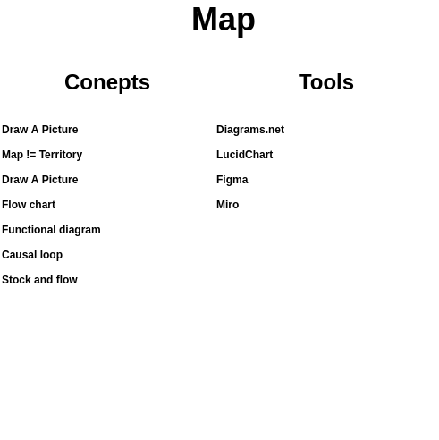

Map

Picture of the Map section (with pictures and colors) goes here. This can prime the reader for the next section and might also help to break up an otherwise monotonous wall of text.
Notes
MOTIVATION
- a picture says a thousand words
- highlight main ideas
- keep it simple
CONCEPTS
- draw a picture
- map != territory
TOOLS
- comic
- flow chart
- causal loop
- stock and flow
- functional
Overview
A picture says a thousand words. The same is true for maps. They can convey a lot of information quickly and intuitively.
Maps are not a perfect representation of a thing. They're an abstraction that communicates the main ideas. Creating a map can help you clarify what the main ideas are. It can also make it easier for your audience to quickly understand and remember the main ideas as well.
Maps don't need to be fancy. They just need to be clear. They should only include the most important things. This often includes the components of the system as well as the relationships between them. This might look like a simple sketch, flow chart, functional block diagram, causal loop diagram, stock and flow diagram, or even interactive media. Whatever you want. The important thing is to clearly illustrate the ideas you want to communicate.
Concepts
Would be nice if this part had pictures of the various types of maps/diagrams.
Draw A Picture
As Polya says in How To Solve It, draw a picture! Simply sketching out your idea with pen and paper can help you understand what you know and you need to discover.
Map != Territory
The map is not the territory and the menu is not the meal. They're representations of things, but they are not the things themselves.
Drawing a map or diagram of your question and potential solution can help refine your thinking. It can also make it easier to convey complex information quickly.
In order to say a lot with a little you have to choose what to include and what to leave out. This is OK as long as you're clear about what you left out and why. Then the reader can better understand your thinking and what the map is trying to convey.
What did you choose to include in your model and why? What did you leave out and why?
Flow chart
A flowchart is a type of diagram that represents a workflow or process. A flowchart can also be defined as a diagrammatic representation of an algorithm, a step-by-step approach to solving a task.
Functional diagram
In systems engineering, software engineering, and computer science, a functional model is a structured representation of the functions (activities, actions, processes, operations) within the modeled system or subject area.
Causal loop
A causal loop diagram (CLD) is a causal diagram that aids in visualizing how different variables in a system are interrelated.
Stock and flow
A stock and flow diagram shows the relationship between stocks (measurement of units) and flows (measurement of time). Essentially, how units change over time based on system dynamics.
Tools
Diagrams.net
Diagrams.net is a free and open source web based diagramming program.
LucidChart
LucidChart is like draw.io, but proprietary and requires a subscription.
Figma
Figma is design software that also lets you create diagrams.
Miro
Miro is visual brainstorming software that can create diagrams and pretty pictures.